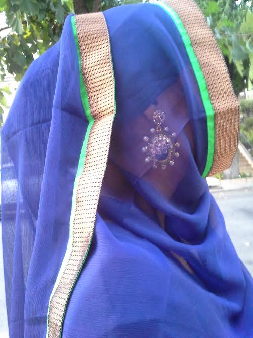

The life of an ABB can be fun and can be difficult to manage. As an American Born Bengali, I have many expectations coming from family. At school, I am known to be very competitive, intimidating and weird, this is because of the fact that people are afraid to get to know me. Therefore, I have taken it upon myself to make myself be known in a way that is true to who I am. I am not competitive, but I am driven. I am not intimidating, but I am outgoing. I am not weird, but I am culturally proud.
At a very young age, I was raised knowing that wherever I go, I am representing my family and my country. I may have others not approach me and I may have friends leave me because of this, but I always stay true to myself. Some friends come and go, but your personality never leaves you. At the end of the way, I will be left with myself so why not be proud of who I am today.
Ways that I get myself known is by coming up to others my offering help or just by starting a conversation through a similarity. The quote 'It's easier said than done' is true, but that moment of realization that you just made a new friend on your own is amazing. Now that I use this method to make new friends, it has made all the difference. I have people come up to me knowing that I'm not competitive, I'm driven, I'm not intimidating, I'm outgoing, I'm not weird, I am culturally proud.
Living life does not mean waiting for the door of opportunity to open, it means to open the door of opportunity on your own. You work hard for good future and you push through with perseverance to prove to yourself that you do have a purpose in this world and that's to make yourself and others happy.